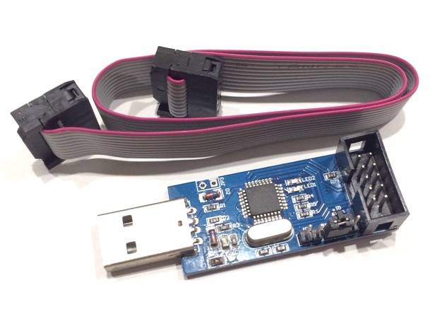

Топ вопросов о 3D печати и общие рекомендации начинающим

Ко мне периодически обращаются разные люди из моего окружения с вопросами, касающимися 3d печати, поэтому у меня сформировался список наиболее часто задаваемых вопросов, я их сейчас озвучу и, наверняка, для многих это окажется полезным. В этой статье я попытаюсь спустить с небес на землю мечтающих заработать на 3д печати и печатать всякую дребедень, скачиваемую из интернета. В другой статье - напишу о преимуществах 3D печати и возможностях, которые она открывает.
Теги: 3d-printing
Про прикручивание скрипта галереи к блогу

Давно назревала необходимость прикрутить к блогу какой-нибудь генератор галерей, но всё как-то руки не доходили и вот, сегодня дошли. Скажу сразу - я ничерта не смыслю в JavaScript, вёрстке и web дизайне (думаю, по внешнему виду моего блога это нетрудно заметить :)). Главными критериями были простота использования и отсутствие лишних наворотов. После перебора нескольких вариантов, наткнулся на следующий: https://nanogallery2.nanostudio.org/
Всё понравилось, решил попробовать. На странице проекта есть примеры и builder, который поможет подогнать значения параметров под требуемые.
Про умный дом, разношёрстность и закидывание деньгами

Я уже много тут писал про минимализм и попытки обойтись малым. Иногда стремление к этому выходит за рамки рационального. Скажем, мне намного дешевле с учётом стоимости моего времени купить какую-нибудь железку, чем пытаться сделать её самому, но иногда просто хочется сделать что-то именно своими руками, разобраться. К сожалению, в области радиоэлектроники и микроконтроллеров я дилетант и никак не могу найти времени чтобы в этом достичь хоть какого-то прогресса, но кое-что можно сделать и на этом уровне. Ещё меня постоянно кидает из стороны в сторону и я постоянно переключаюсь с умного дома на 3д печать, с 3д печати на моделирование, с моделирования на что-то ещё. Благо, что зачастую эти сферы соприкасаются друг с другом и навыки, полученные в одной оказываются полезными в иной там, где этого не ожидаешь.
Теги: smarthome, automatization, lifehack, minimalism
Про минимализм, докер, home assistant и ресурсы

Предупрежу на берегу - сейчас будет ворчание старого пер... винтажного газогенератора. Кто не переваривает всю эту "траву, которая раньше была зеленее" - проходите мимо. :)
В мире есть мало вещей, которые меня выводят из себя. И одна из таких вещей - расточительность в отношении ресурсов. Для того, чтобы всем было понятно, представьте, как какой-нибудь олигарх публично жалуется на жизнь, мол, как ему тяжко стало жить! И теперь он в месяц зарабатывает не 20 миллионов, а только 15. В IT мире примерно то же самое. За последние несколько лет индустрия шагнула далеко вперёд и у бизнеса появилась возможность заткнуть любую дыру деньгами или, как ещё говорят - "закидать железом". Ну и что, что наше приложение обрабатывает за секунду не миллион запросов, а только 100 тысяч - давайте просто купим 10 серверов вместо одного и всё будет ок! Да, зачастую это разумный подход и действительно - проще оплатить аренду более жирной виртуалки, чем платить пару месяцев зарплату всему отделу, который это будет оптимизировать. Но на этих принципах выросло уже целое поколение разработчиков и целая куча продуктов, которые иногда у меня вызывают недоумение. Помнится, в конце 90-х годов шикарной домашней машиной считался Pentium MMX на 166 мегагерц с 32мб оперативной памяти и жёстким диском хорошо, если на 1гб. Сейчас долбаные полоумные часы несут на борту куда более мощное железо. А тогда на этих машинах играли, смотрели кино, слушали музыку, редактировали документы, программировали в конце-концов и вполне успешно!
Теги: админское, docker, minimalism, smarthome, подгорание
Про классический холивар
Тут пару дней назад общались в телеграме с товарищем (далее Т). И речь зашла о холиваре - мол, я вот, отщепенец/извращенец такой сижу на линуксе, а больше никому он никуда не сплющился и никто его не использует. Так смешно стало. Далее примерный диалог:
Про силиконовых монстров, агрессию, сосульки и правильные вопросы к себе
Интересно, почему подобные мысли приходят в голову именно в 4 часа ночи?
Вспомнился случай, который произошёл со мной лет около 10 назад. Стоял я в супермаркете "Семья" на Борчанинова в очереди, когда передо мной бесцеремонно вклинилась с бутылкой пива некая особа лет на пять по виду меня постарше. Спортивный костюм, бейсболка, длинные прямые чёрные волосы, ногти длиной с треть карандаша, сантиметровые ресницы и две ботексные пельмехи на том месте, где у людей обычно расположен рот. Другими словами - классический силиконовый монстр (далее СМ) с альтернативными весьма представлениями о прекрасном. Я ей сказал, что её здесь не было и попросил переместиться в конец очереди. Вежливо и спокойно попросил. Если бы она в свою очередь попросила её пропустить - без проблем, мне не жалко, но терпеть не могу людей, которые считают, что мир крутится вокруг них и им все должны. Далее между нами произошёл примерно следующий диалог:
Теги: жизненное
Про клиентоориентированность
Понадобилось мне заказать кресло-кровать. Так как в жизненном пространстве я достаточно ограничен, кресло-кровать должно было иметь оперделённые габариты и быть достаточно компактным. А так как двигать его придётся преимущественно жене, то и вес должен быть небольшим. Потратив неделю на поиски по Перми и ещё несколько дней на поиски по всей стране, нашли подходящее в Москве, но в полтора раза дороже ожидаемого, плюс доставка. Жаба истошно квакала, но в конце-концов, сон и удобство жены мне дороже. Пытался оформить заказ и в связи с этим пришлось столкнуться с парой занятных моментов.
Теги: подгорание, осадочек-остался
Обновление прошивки программатора USBASP с помощью Arduino UNO

Когда-то давно я приобрёл китайскую копию программатора USBASP. При попытке перепрошивки микроконтроллеров через ISP я, как и многие другие, получал ошибку следующего вида:
avrdude: warning: cannot set sck period, please check for usbasp firmware update
Инструкции, которые я обнаружил, были написаны с рассчётом на использование в Windows, а так же в некоторых статьях я заметил ошибки и несоответствия (например, неверно указан тип программатора для avrdude, из-за чего какое-то время пришлось побуксовать), так что решил написать для себя короткую статью, убрав всё лишнее.
Теги: avr
Мракобесие без джаза и 5G
Давно уже заметил, что статьи получаются лучше, когда то, о чём ты пишешь, тебя задевает и когда тебя переполняют эмоции. И вот, сегодня как раз такой случай.
Недавно во второй раз уже наткнулся на видео под заголовком "ОПАСНАЯ ТЕХНОЛОГИЯ 5G. Умная пыль. Для Чего На самом Деле Нужны Сети 5G?". Ссылку приводить не буду, так как youtube периодически удаляет сомнительный контент или понижает его рейтинг. Видео чаще всего из себя представляет статичную картинку, под трансляцию которой зачитывается один и тот же текст. Я приведу его здесь со своими комментариями:
Теги: жизненное